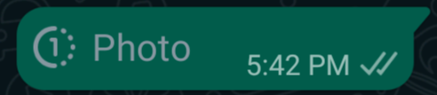

The go kart:
I wanted it to be made entirely from wood since this had never been done before and besides for the regular engineering part this would incorperate material engineering as well
First i drew the basic go kart

From there I needed to map out exactly how big I was going to make it. The best way to do this was to actually tape it onto my floor

I decided to make it xbyx
Shortly after i bought the neccasary pieces to begin and had the wood cut.

Due to budget constraints I opted for a cheap rear axle.
The only sprocket compatible was a T8F sprocket this was an issue because
(If you dont know what a clutch is heres an analogy Imagine you're on a merry-go-round. As it spins faster, you feel yourself being pushed outward by the force of the spin. In a centrifugal clutch, something similar happens. As the engine spins faster, the spinning force pushes 'brake shoes' outward until they press against the inside of the clutch housing, gripping it tightly. This grip transfers power from the engine to the go-kart wheels, making it move forward.
Solution #1
why cant i just by a sprocket that can be attached to the T8F sprocket so that we can get the threads from the T8F sprocket except with a 420 sprocket


The steering
In order to understand the various problems we must understand how a steering system works


Firstly i designed and 3-D printed a piece to prevent the steering system for moving
but what if they steal it and sell it because it's valuable art
i know, i'll just use a single view image!
enter: whatsapp web
more specifically, whatsapp-web.js
whatsapp web disabled single view media functionality, requiring you to use your phone
but... the media is still sent to the browser
exploit time
using a custom userbot script, it is possible to retrieve the message media
demo:

full code
i tried responsibly disclosing this to whatsapp, but they ignored me